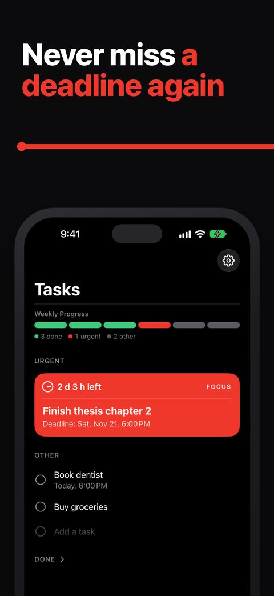
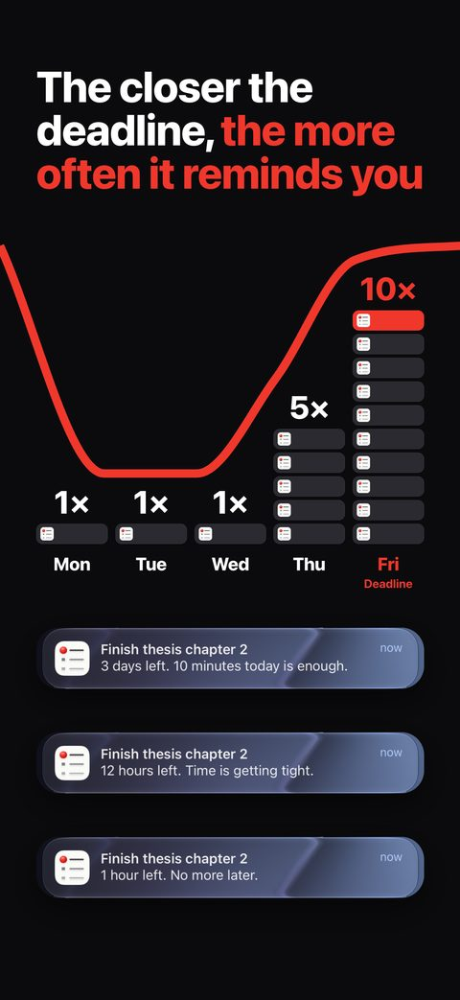
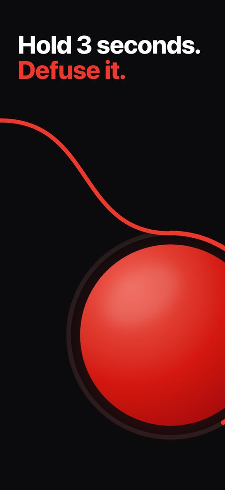
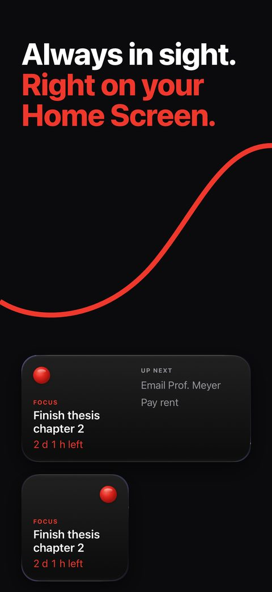
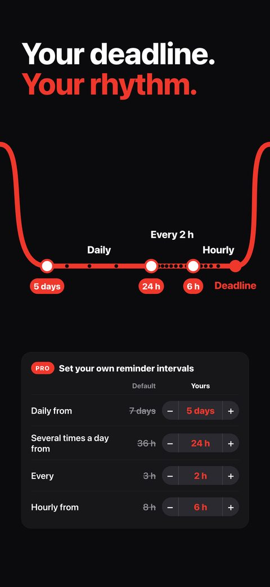
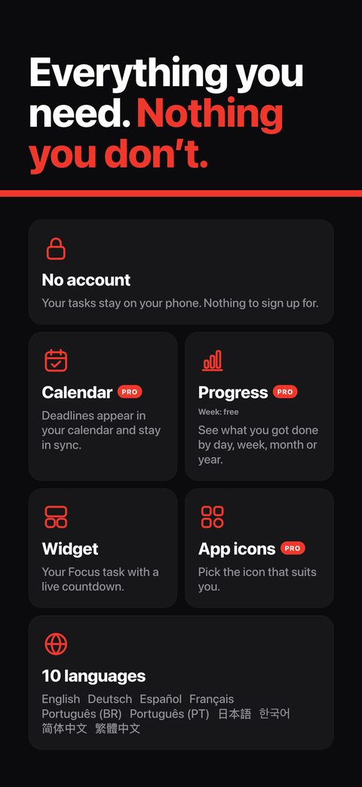
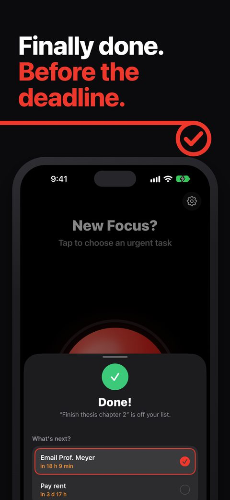

Put it off one more time?
Not anymore.
No Later is a to-do list built for people who procrastinate. The closer the deadline, the more often it reminds you. Until you hold the red button and it's done.
Free for iPhone · No account needed







How it works
- Add a task and a deadline"Finish thesis chapter 2, Friday 6 PM." That's all it needs.
- Reminders get more frequentOnce a day while there's time. Every few hours when it gets close. Every hour on deadline day.
- Hold the red buttonDone? Hold it for 3 seconds to defuse the task. The reminders stop.
FAQ
Do I need an account?
No. There's no sign-up and no login. Open the app and add your first task.
Where are my tasks stored?
On your iPhone. No Later sends anonymous usage statistics to improve the app, and you can turn them off in the app's settings. Details are in the Privacy Policy.
What if I turned off notifications?
Then No Later can't remind you, and reminders are the whole point. Turn them back on in the iPhone Settings app under No Later → Notifications.
Is there an iPad or Android version?
Not yet. No Later is made for iPhone (iOS 18 or later).
Which languages are supported?
English, German, Spanish, French, Portuguese (Brazil and Portugal), Japanese, Korean, and Chinese (Simplified and Traditional).
How do I cancel Pro?
In the Settings app: tap your name → Subscriptions → No Later. Lifetime is a one-time purchase and doesn't renew.
Pricing
Start free. Upgrade if you want more control.
Free
$0
- Tasks with deadlines
- Escalating reminders
- One Focus task
- 1 urgent task
- Home Screen widget
Pro
$24.99 / year
14-day free trial · or $3.99 / month · or $49.99 once
- Everything in Free
- Unlimited urgent tasks
- Custom reminder intervals
- Apple Calendar sync
- Progress stats for day, week, month and year
- Alternative app icons
Prices in USD. Local prices are shown in the App Store. Cancel anytime in your Apple Account settings.
Stop putting it off.
Questions? Support · support@nolater.app